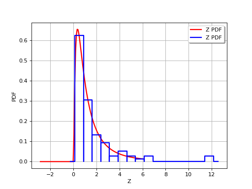

Estimating moments with Monte Carlo¶
Let us denote
,
where  is a random
vector, and
is a random
vector, and  a deterministic vector. We seek here to
evaluate, the characteristics of the central part (central tendency and
spread i.e. mean and variance) of the probability distribution of a
variable , using the probability distribution of the random
vector
a deterministic vector. We seek here to
evaluate, the characteristics of the central part (central tendency and
spread i.e. mean and variance) of the probability distribution of a
variable , using the probability distribution of the random
vector  .
.
The Monte Carlo method is a numerical integration method using sampling, which can be used, for example, to determine the mean and standard deviation of a random variable (if these quantities exist, which is not the case for all probability distributions):
where represents the probability density function of .
Suppose now that we have the sample
of  values randomly
and independently sampled from the probability distribution
; this sample can be obtained by drawing a
sample
values randomly
and independently sampled from the probability distribution
; this sample can be obtained by drawing a
sample  of the
random vector (the distribution of which is known) and
by computing
.
Then, the Monte-Carlo estimations for the mean and standard deviation
are the empirical mean and standard deviations of the sample:
of the
random vector (the distribution of which is known) and
by computing
.
Then, the Monte-Carlo estimations for the mean and standard deviation
are the empirical mean and standard deviations of the sample:
These are just estimations, but by the law of large numbers their
convergence to the real values and
is assured as the sample size tends to infinity. The Central
Limit Theorem enables the difference between the estimated value and the
sought value to be controlled by means of a confidence interval
(especially if N is sufficiently large, typically > a few
dozens even if there is now way to say for sure if the asymptotic
behavior is reached). For a probability  strictly between
0 and 1 chosen by the user, one can, for example, be sure with a
confidence , that the true value of is
between and
calculated analytically from simple formulae. To illustrate, for
strictly between
0 and 1 chosen by the user, one can, for example, be sure with a
confidence , that the true value of is
between and
calculated analytically from simple formulae. To illustrate, for
 :
:
The size of the confidence interval, which represents the uncertainty
of this mean estimation, decreases as increases but more
gradually (the rate is proportional to : multiplying
by 100 reduces the length of the confidence interval
by a
factor 10).
This method is also referred to as Direct sampling, crude Monte Carlo method, Classical Monte Carlo integration.
(Source code, png, hires.png, pdf)
{kind=link}
{kind=link}

API:
See
Sample
Examples:
References:
Robert C.P., Casella G. (2004). “Monte Carlo Statistical Methods”, Springer, ISBN 0-387-21239-6, 2nd ed.
Rubinstein R.Y. (1981). “Simulation and The Monte Carlo methods”, John Wiley & Sons
“Guide to the expression of Uncertainty in Measurements (GUM)”, ISO publication